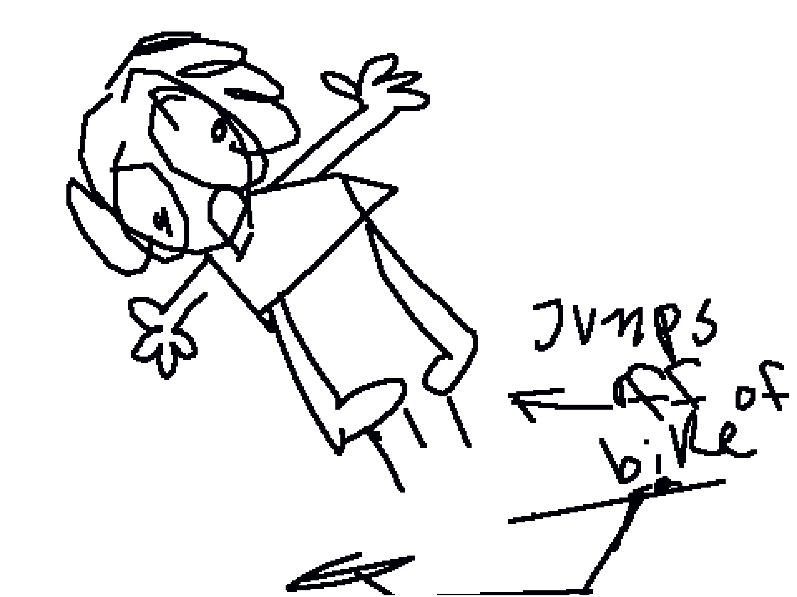
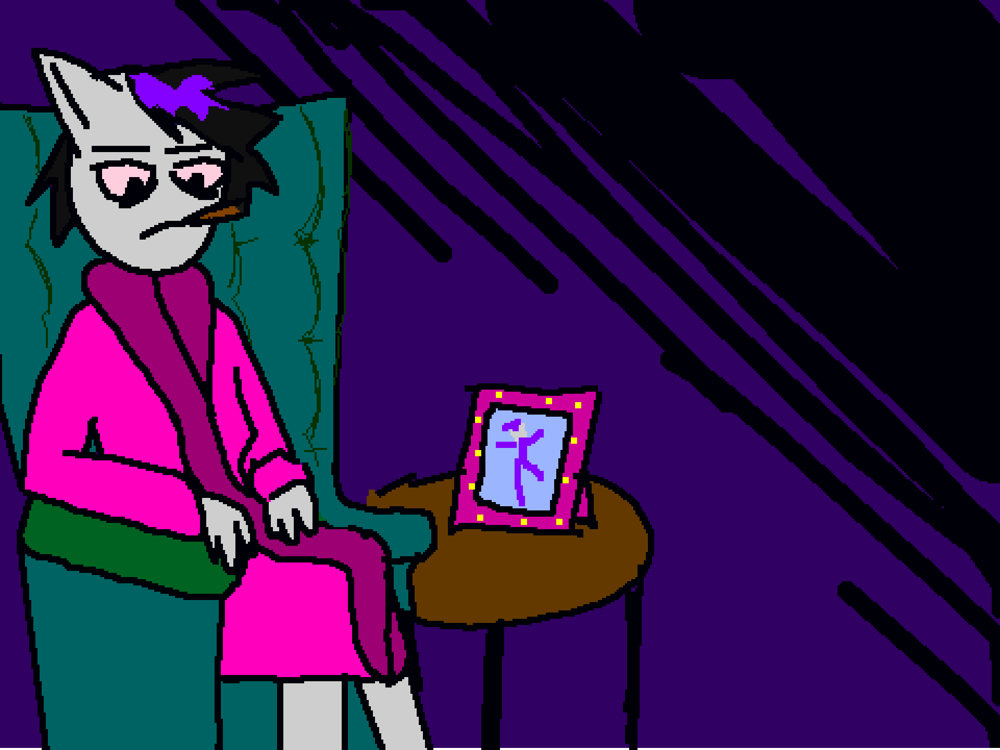

carmi
carmi Today at 5:08 PM
hi im carmi. i run
spicyyeti.com and make webcomics
svvord Today at 5:09 PM
about since when have you been on the internet?
either your first overall experiences or really getting Online.
carmi Today at 5:11 PM
sgaljsalgjsd well one of my first internet memories was being shown the veggie tales bellybutton song on youtube in 2006. but i really got On the internet in 2008 when i stole my moms new laptop
svvord Today at 5:12 PM
LMAO i feel like there's so much skirting of parents with being on the internet as a kid, I always had to get on the computer when my dad was busy with other stuff
carmi Today at 5:12 PM
AGHASGJ THATS KINDA TRUE for the first few years i was online my computer was in the same room as my moms but it was facing away from hers so AGASDK I JUST ALWAYS MADE SURE TO HAVE MY VOLUME DOWN
svvord Today at 5:13 PM
you didn't have headphones?
actually nvm i remember not having headphones either
carmi Today at 5:13 PM
I THINK I FIRST GOT HEADPHONES IN 2012 AHGDSK
svvord Today at 5:14 PM
HONESTLY similar, i feel like now ive always used headphones (i dont even own speakers for my computer) but we really just had audio playing for the whole room didn't we
or on the lowest volume and holding the speaker to my ear
Being on the internet itself since 2008, when would you say you started being really social online?
carmi Today at 5:17 PM
i got online in late 2008 and by 2009 i had started using this website called
scratch.mit.edu
i found it because i wanted to find the original club penguin "penguin chat" demo or whatever the hell it was called
and someone had recreated it in scratch
so i guess i technically mustve been using club penguin before i got on scratch AFKL;AS IDK
but yeah both of those sites were extremely social for me
svvord Today at 5:18 PM
i think i get the gist of club penguin, but what was
scratch.mit.edu like?
carmi Today at 5:19 PM
so scratch is a site developed by MIT used to teach kids how to program
i think for the most part kids are introduced to it in school but i happened to find it on my own
back then you would make an account, download the program, and make and upload projects in it
your and others peoples projects were viewable in-browser (and nowadays the program itself is in-browser too)
kids pretty much had free reign to comment on each others projects, interact in the forums, even organize meetups and share their skypes and such AHKGHSAKGJ IT WAS HONESTLY KINDA CHAOTIC EVEN WITH ADULT MODERATORS TRYING TO KEEP THE PEACE
IN MY FIRST PROJECT I ASKED FOR PEOPLES ADDRESSES
svvord Today at 5:21 PM
LMAOO
that is so interesting, ive honestly never heard of that!
carmi Today at 5:22 PM
IT WAS A REALLY INTERESTING SITE TO GROW UP ON
another funny feature scratch has is "remixing" peoples projects
ideally youre supposed to do it like forking in github jsdfjsda like using it to improve on someones code i think
BUT NOBODY ACTUALLY KNEW HOW THE HELL TO CODE AT ALL AND 99% OF THE TIME IT WAS USED TO BLATANTLY STEAL AND RECOLOR PEOPLES PROJECTS HASDGASKG

svvord Today at 5:23 PM
getting kids into copyright theft early on
carmi Today at 5:23 PM
LITERALLY we'd just put copyrighted music in our projects and write "credit to whoever made this"
WE REALLY WROTE THAT
svvord Today at 5:23 PM
NICE
were your profiles basically your real names/selves?
carmi Today at 5:25 PM
not at all agsjgks to this day im a little shocked that its normal to use your real name on twitter
everyone went by a username
everyone had an avatar (usually an anthro)
carmi Today at 5:25 PM
mine was a cat
svvord Today at 5:25 PM
did they have anthros to choose from or did you just upload your own picture?
carmi Today at 5:26 PM
they did not have anthros to choose from. the starting assets from scratch were all these really ugly characters or straight up cutout photographs of real kids GDASKJGASKJGSADJKSAGJK SO YEAH it was expected you would design your own anthro
socially though there were like
A FEW MAIN SPECIES TO CHOOSE FROM
there were the cats, mostly kids who were warriors fans
there were hamsters and idk where they got that idea but yeah there were hamsters
and there were tokis? takis?? they were lizard creatures designed by a notable scratcher
svvord Today at 5:28 PM
were there more social threads or was it strictly project based?
carmi Today at 5:32 PM
there were forums i didnt know how to work as a kid ghjhkjsg one of the people on the godhead music team actually frequented the scratch forums as a kid and theyre still a part of a social group that came out of that fdlsaflk im also still a part of my social group that came out of the projects. its funny to me these unique social strains came out of the same website and same time period
we were coexisting and Didnt Even Know
svvord Today at 5:33 PM
small internet...
were there any other social-ish sites you used/currently use?
carmi Today at 5:35 PM
after scratch i got on deviantart and id say thats where i spent the bulk of my time on the internet somehow?? fks;lfksl;a i rarely socialized with anyone who werent my friends from scratch cuz deviantart is full of weird fetish people but it was a good site to develop as an artist
oh wait i did use tumblr in its heyday
i was not active on tumblr i joined to look at homestuck fanart
and similarly i joined twitter in 2019 to look at homestuck fanart

svvord Today at 5:36 PM
it do be like that
were you mostly social offline then?
carmi Today at 5:38 PM
not really AHGASHJGKSA ive always been kind of a shutin. after i formed a solid group of friends on scratch i just stuck with them until PRETTY MUCH LAST YEAR
theyre still my friends, what i mean is i didnt branch out socially much until recently
though of course i had school friends
svvord Today at 5:39 PM
would you say your friends from scratch were similar to the friends you made at school?
carmi Today at 5:40 PM
not really? the friends you meet online youre able to filter out more whereas the ones you meet at school sometimes youre stuck with circumstantially DSAHGUGHUDHKASGHJASK
i found it easier to bond with specific people online
at school i didnt form many close bonds, i just kinda tried to keep a good reputation and not much else
svvord Today at 5:41 PM
that's very fair! it can be stressful, especially with school having more professional consequences.
carmi Today at 5:41 PM
the older you get yeah
svvord Today at 5:42 PM
and you've kept a pretty consistent online "brand"/persona over the years, right?
carmi Today at 5:43 PM
id say so. i think the ways i interact online can be categorized in either the carmi persona or the spicyyeti persona
spicyyeti came in 2015
svvord Today at 5:45 PM
how would you differentiate those two personas?
carmi Today at 5:46 PM
the carmi one is like a concentrated version of my personality...its like what i use to talk to people online openly and freely
the spicyyeti one is more something i use to advertise my work? i find it comically aggressive and i wouldnt use it to actually talk TO anyone. its more just an announcer voice, a way to present read-only information
since spicyyeti for me is a site that represents me in a way that people can only look at, not interact with.
svvord Today at 5:50 PM
spicyyeti is your personal work site, correct?
carmi Today at 5:50 PM
yup
svvord Today at 5:51 PM
what kind of things do you post on spicyyeti?
carmi Today at 5:52 PM
PRETTY MUCH WHATEVER I WANT....................the four main links are "home", "art", "stories", and "about"
but there are a ton of hidden links that lead to a bunch of random bullshit as well
svvord Today at 5:55 PM
Do you find any way that the internet or the sites you use don't host yourself in a way you wish they could?
carmi Today at 5:56 PM
like do i wish i could represent myself as clearly on other sites as i do on spicyyeti??
svvord Today at 5:58 PM
when presenting yourself in either the carmi or spicyyeti role, do the different sites/programs you use for each one fail in some way, or do you wish that they had some additional/different functionality to present yourself exactly as you'd intend?
carmi Today at 6:02 PM
oh ok well i guess i dont have much constructive criticism for other sites since i can just go to my own and do what i want dshagjkg like i accept that presenting myself in an isolated environment such as my own site is going to afford me more freedom than socializing with others through ANY interface, whether online or irl
admittedly ive had a lot of social fails online but as janky as any of the social media platforms we have to choose from are i dont really blame the platform when that happens
i think socializing is just a mess no matter where you go AGASGHKJSAGDSA
svvord Today at 6:05 PM
but yeah, i feel that
do you find yourself preferring your own web space over traditional social media?
carmi Today at 6:08 PM
i used to but now i feel its optimal to have both
as much as i do spicyyeti for myself i wouldnt publish it if i didnt want others to see it dsafhs im glad people on twitter have shown interest
im also glad i can actually talk to people on twitter and watch their shenanigans as well ;safksf;lsa
back to top